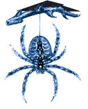
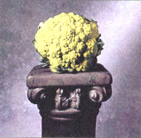

Spider silk may save your life one day
Spiders set off weird reactions in people. Some scream, some admire, some grab the nearest newspaper and whack it to dust. Nevertheless they are part of our everyday life, found in barns, along fence posts, and just about anywhere you care to look.
Yet not only are most spiders harmless, they are now part of a scientific revolution. Researchers are presently working to unravel the chemical and mechanical secrets of spider silk-the webby stuff that sticks to your face when you walk through it. According to recent studies, the protein found in spider silk is tougher-pound for pound-than steel wire.
Spiders can change the strength and elasticity of the silk, according to their needs. To give you an idea of the fineness, the diameter of silk can be as thin as 1/500,000 of an inch (human hair is 1/250 inch). Says Dr. Jonathan Coddington of the Smithsonian's National Museum of Natural History in Washington, D.C., "Silk used in the structural support of a web is not the same stuff they wrap their prey in. Likewise, silk found in the center of a web is coated with a sticky glue to catch flies; another silk is used to wrap their eggs."
What does this all mean? Well, given spider silk's resistance to breaking and stretching and its ability to absorb impact, scientists are thinking up potential uses for massive amounts of synthetic silk. They are considering ways to use the man-made silk to replace Kevlar, the synthetic fiber which halts bullets in bullet-proof vests, and also to replace the steel cables which support suspension bridges. So the next time you find yourself holding a murderous shoe over an innocent Daddy Long Legs, drop it-he may save your life one day.
Introducing a truly confusing vegetable. It has the texture of cauliflower. It smells like cauliflower. In fact, you'd swear it was cauliflower-if it wasn't neon green. The name of the vegetable in question is broccoflower, and it's the result of a genetic cross between broccoli and cauliflower.
Sounds like a gimmick, doesn't it? If you're wondering why anyone would bother to combine two perfectly fine vegetables into one, wait before getting your dander up-the sweet, buttery tasting vegetable contains twice the amount of Vitamin C and folic acid as either broccoli or cauliflower alone. It's also an excellent source of fiber and potassium, according to nutrition educator Dr. James Scala, who claims that eating broccoflower helps prevent cancer and high blood pressure and keeps the digestive system in good form.
Broccoli flower sports the hard, granular head of cauliflower plus a healthy dose of green chlorophyll thrown in-compliments of broccoli. Tanimura & Antle, Inc. brought the seed over to Salinas Valley,
California, after it was first discovered in Holland in 1988. Growers created the hybrid in an effort to find hearty new vegetables, and it looks like they did just that:
Although this day-glow green hybrid is grown like any other vegetable, its seeds are not yet commercially available. You can find the broccoflower itself at many grocery stores (you can't miss it). Cook it like you would any other vegetable-wash first, dump it in boiling water or steamer, and don't cook it for too long or you'll lose the treasured nutrients. For a twist, add salt and vinegar to a pan of cold water and dip the broccoflower heads in it so they cook up extra crispy.
With its healthful attributes, broccoflower will no doubt nab the attention of diet-conscious eaters in the United States. And there's one more important plus: rumor has it that kids, vegetable-haters of America, are partial to its sweet taste and outlandish color.
It's been almost three years since the Exxon Valdez struck a reef in Prince William Sound and expelled 11 million gallons of oil into the water. Time to pay up.
According to the terms of the financial settlement, funds must be used for "restoring, replacing, enhancing, rehabilitating, or acquiring the equivalent of natural resources." Here's the breakdown: $50 million in restitution each to the state and federal governments, $900 million for a civil settlement and restoration fund overseen by a trustee council, and a $25 million criminal fine. That'll be about $1 billion dollars, please.
Conflict about spending the money is overwhelming. Many native Alaskans, conservationists, and commercial fishermen feel the state should purchase land that would be protected for future generations, but provide an immediate benefit to native corporations and the Alaskan economy. They could also save endangered wilderness from chain saws and real estate developers. However, the Council of Oil Spill Trustees insists that scientific studies would have to prove a connection between the spill and the new land before they would even consider it. Many worry that this would create a ridiculous waste of time and money.
Trustees will not finalize plans for spending the money-to be paid in 10-year installments-until next spring. If you have suggestions, write them at: 645 G Street, Anchorage, AK 99501
Editor's note: Do you have any interesting, timely, or peculiar news items you would like to share with other MOTHER readers? Send them to: "Bits & Pieces," Mother Earth News, P.O. Box 129, Arden, NC 28794.
|
 The Broccoflower: to good to be true? |
 |
|